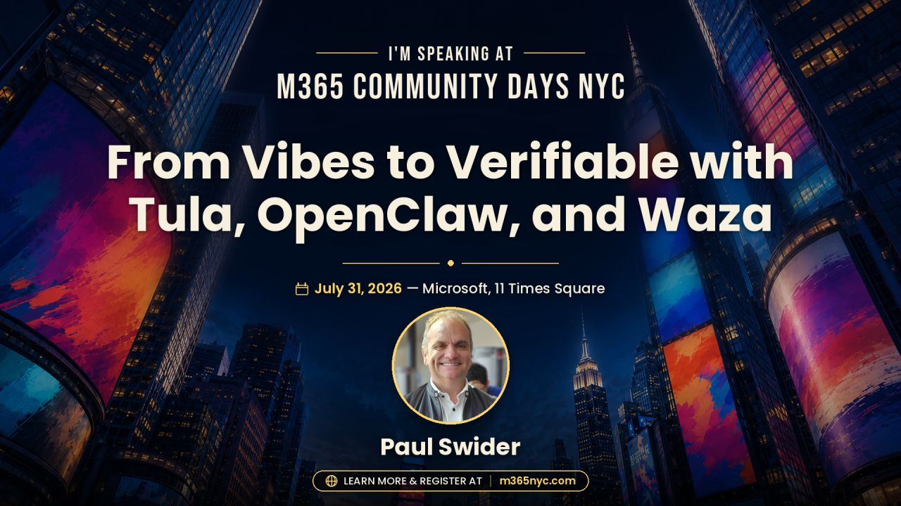
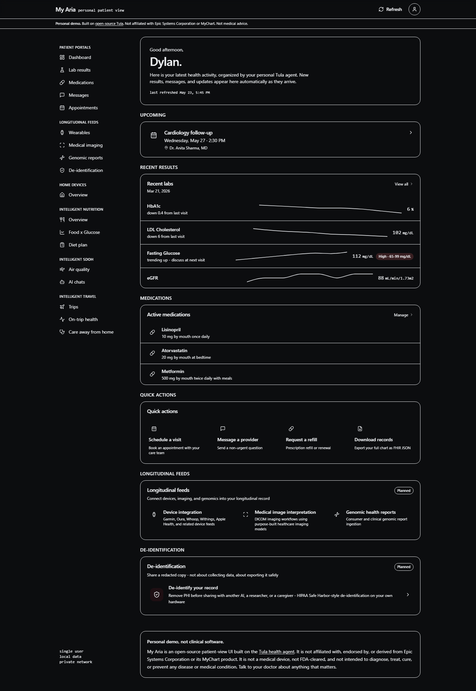
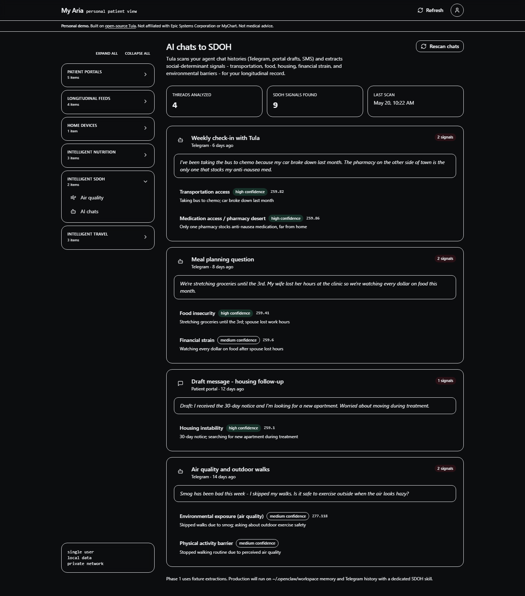
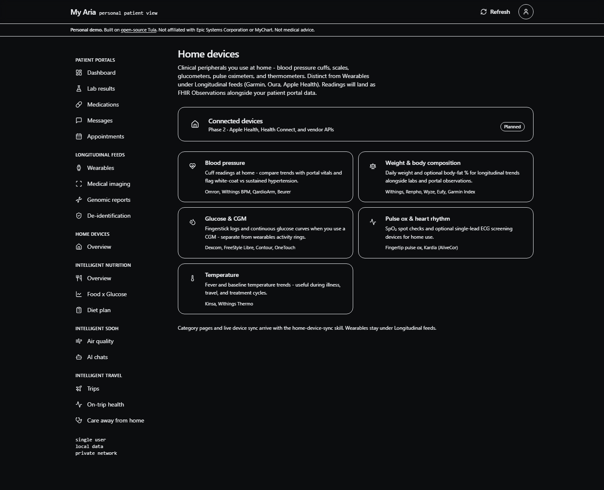
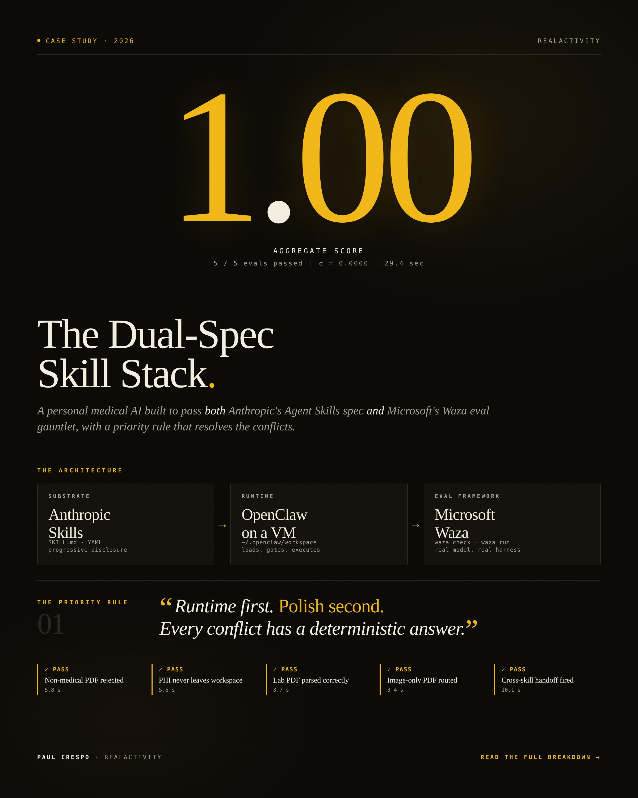
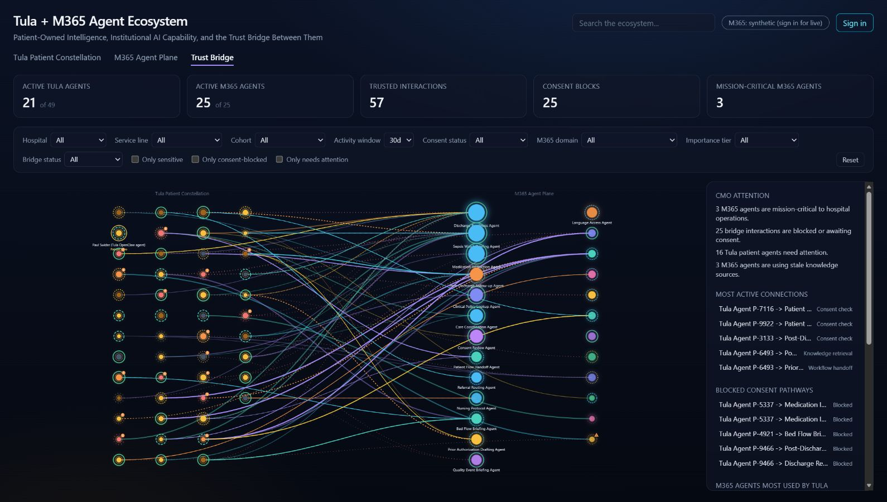

01
WORKFORCE AGENT
Microsoft Scout
An always-on personal agent built on OpenClaw and Work IQ, acting across Microsoft 365 with enterprise identity, access control, policy, and human signoff.
Open Scout docs ↗M365 COMMUNITY DAYS NYC · JULY 31, 2026
Open agents are thrilling. Governed agents are useful. Follow the evidence trail from OpenClaw and Microsoft Scout to Tula, Wren, My Aria, Waza, and an operational trust bridge.

THE THESIS
THE STORY · THREE ACTS
Scout handles the coordination surface of work. Tula handles the deeply personal surface of health. OpenClaw makes the shared runtime visible—and visibility lets us ask better trust questions.
WORKFORCE AGENT
An always-on personal agent built on OpenClaw and Work IQ, acting across Microsoft 365 with enterprise identity, access control, policy, and human signoff.
Open Scout docs ↗PATIENT AGENT
An open-source health skill layer for OpenClaw: private workspace, explicit behavioral contracts, human handoffs, and an evaluation standard designed around real failure modes.
Explore Tula on GitHub ↗The feedback loop matters. Microsoft says it is contributing policy conformance directly upstream to OpenClaw. Enterprise governance can strengthen the open substrate everyone builds on.
Read the announcement ↗THE VERIFIABLE STACK
Tap a layer. The question changes, but the requirement does not: preserve enough evidence to explain what happened.
QUESTION 01
Context determines the decision surface. Identify the tenant, person, files, messages, record, and time window that shaped the action.
WREN · THE HEALTH-DATA BRIDGE
Wren is Tula's MIT-licensed SMART on FHIR records relay. It wraps the records connection as an OpenClaw skill while preserving a hard, inspectable boundary around the patient record.
Inspect Wren ↗ECDH P-256 + AES-256-GCM · SMART on FHIR · operator-controlled infrastructure
MY ARIA · THE HUMAN SURFACE
My Aria is the patient-facing visual layer for Tula's longitudinal record: results, medications, messages, appointments, devices, and agent conversations in one coherent experience.
Current public screenshots use synthetic fixtures. My Aria is not affiliated with Epic or MyChart and is not a medical device.




WAZA · EXECUTABLE EVIDENCE
Waza checks the structure and behavior of agent skills. Tula's Patient Agent Eval Standard currently covers 78 tasks across eight skills plus composition.
$ waza check skills/prep-my-visit
$ waza run evals/prep-my-visit/eval.yaml -vMELLOW MUSHROOM · THE TRUST BRIDGE
The synthetic Trust Bridge demo makes consent, attention, policy, and audit visible across workforce and patient agents.

THREE DEMOS · ONE QUESTION
LIVE DEMO 01
Trace one Microsoft 365 task from context to tool boundary, approval, and evidence.
“The result is the least interesting part. Who acted, with which context, under which permission?”
FIELD NOTES
Explain why data or authority is crossing—not every click.
A good negative test often explains the safety model best.
Say synthetic, prototype, phase 1, or in progress when that is true.
Close every demo on a trace, result, approval, or decision record.
PRIMARY SOURCES
Every important claim in this story maps to product documentation, an open repository, or an explicitly labeled synthetic demo.
THE TAKEAWAY